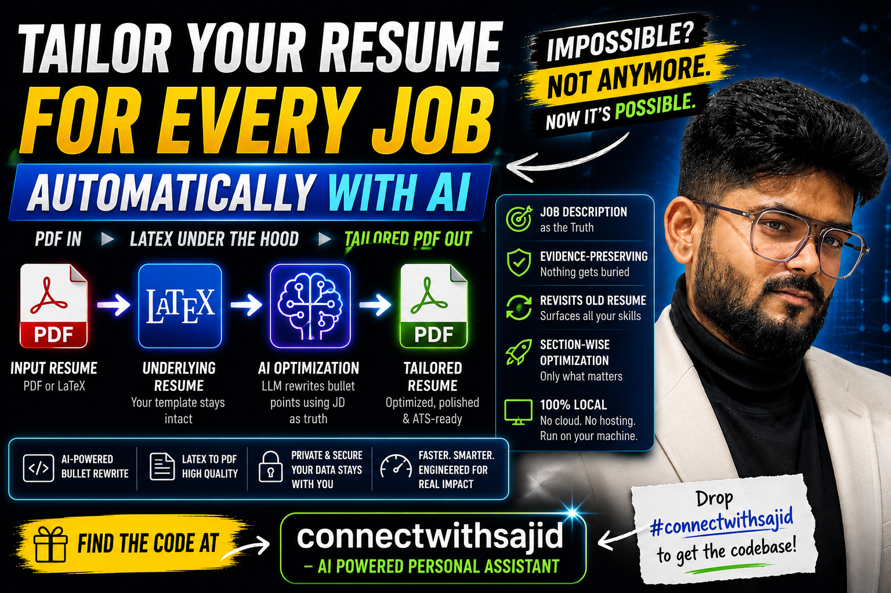

LLM Tooling / Build Log
Resume Optimizer: tailoring every application without rewriting the truth
This weekend I built an AI-powered Resume Optimizer that tailors a resume to a job description automatically, while keeping every claim truthful and preserving the original LaTeX-driven output.

The problem I wanted to solve
People often say you should tailor your resume for every role. They are right. A backend platform role, a data engineering role, and an AI tooling role all emphasize different evidence, even when they come from the same career story.
The issue is not whether tailoring is useful. The issue is that doing it manually for every single application is slow, repetitive, and easy to get wrong. Valuable projects disappear, keyword coverage drifts, and the final document often loses the structure that made it strong in the first place.
I did not want a gimmick that simply rewrites everything with inflated language. I wanted a repeatable engineering pipeline that could preserve evidence, optimize selectively, and still hand back a clean, ATS-friendly resume artifact.
What the Resume Optimizer takes in
- Your resume in PDF or LaTeX form.
- A job description for the exact role you are targeting.
- Past resume versions so earlier but still-relevant evidence can be surfaced again when needed.
That third input ended up being one of the most important parts of the system. Resumes evolve over time, and old versions often contain strong bullets, projects, or skill phrasing that quietly vanish as priorities shift. I wanted the optimizer to remember that history instead of treating the latest version as the only source of truth.
The pipeline behind the scenes
Under the hood, the tool is structured like a small local AI workflow rather than a one-shot prompt.
1. Extract only the sections worth optimizing
The first step is not “rewrite the resume.” It is figuring out which sections are actually candidates for change. Experience bullets, project descriptions, and summary sections can be optimized. Contact info, layout, dates, and the broader structure should stay intact.
2. Analyze the job description for signal, not just keywords
The optimizer looks for required skills, repeated terminology, engineering themes, and role expectations. That means it is not only collecting keywords like Python, AWS, or RAG. It is also identifying patterns such as platform ownership, distributed systems, experimentation, local tooling, analytics workflows, or product-minded execution.
3. Revisit prior resume versions for buried evidence
This is the feature I am happiest with. Instead of trusting a single uploaded resume as the full record, the tool revisits earlier resume versions to recover accomplishments that may still matter for the target role. That allows the optimizer to resurface the best evidence for a given application rather than letting good material disappear over time.
The goal is not to invent experience. The goal is to recover the right evidence from experience you already have.
4. Rewrite only the relevant bullets with an LLM
Once the candidate sections and supporting evidence are assembled, the LLM rewrites only the bullets that benefit from tailoring. The rest of the resume remains unchanged. That selective approach matters because it keeps the document grounded and reduces the chance of unnecessary drift.
I used GPT mini in my implementation, but the architecture is model-agnostic. You can swap in the LLM provider of your choice as long as it can follow the constraints of evidence-preserving rewriting.
5. Rebuild the final artifact using the original LaTeX template
Many tools stop at rewritten text. I wanted the pipeline to return a polished final document, not just an intermediate draft. So after optimization, the system regenerates the final resume using the original LaTeX template and exports a finished PDF. That keeps formatting, spacing, and overall presentation consistent with the source version.
Why local-first mattered
I intentionally built this as a local-first system:
- No cloud deployment required.
- No hosting required.
- No forced upload pipeline for sensitive resume data.
- Run everything on your own machine with the provider and model you prefer.
Resumes contain personal data, work history, company names, and role context. Keeping that workflow local was not just a convenience choice. It was part of the trust model.
What I wanted this to be from an engineering perspective
Most resume tools are positioned as text helpers. I approached this as an engineering pipeline with constraints:
- Evidence-preserving so the system never drifts into fabricated claims.
- Section-wise optimization so only relevant parts change.
- ATS-friendly output so the final PDF still behaves like a real resume artifact.
- Template preservation so the original structure and polish remain intact.
- Model-agnostic architecture so the workflow is not coupled to one provider.
Why I think this matters
The interesting part is not just that an LLM can rewrite bullets. The interesting part is that resume tailoring can be turned into a controlled pipeline with clear boundaries: what can change, what cannot change, what evidence is allowed, and how the final document gets regenerated.
That same pattern shows up in a lot of practical AI systems. The value is rarely the model alone. The value comes from how you structure inputs, constrain transformations, preserve truth, and produce a reliable output that fits a real workflow.
Where to find it
If you want to inspect the implementation, the repository is here: connectwithsajid/resume-optimizer.
You can also explore more AI builds, backend systems, and applied engineering work across the rest of connectwithsajid.
I am always open to feedback and collaborations on practical AI systems that solve real problems. If this kind of tooling resonates with you, reach out through connectwithsajid.github.io.
React or ask a follow-up
Comments and reactions are powered by GitHub Discussions under the connectwithsajid brand.